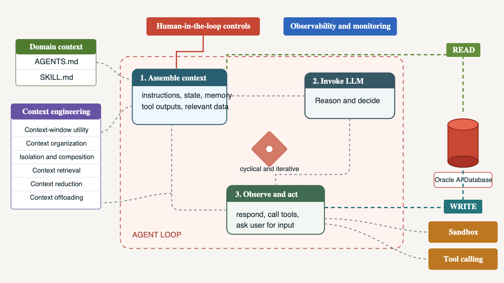
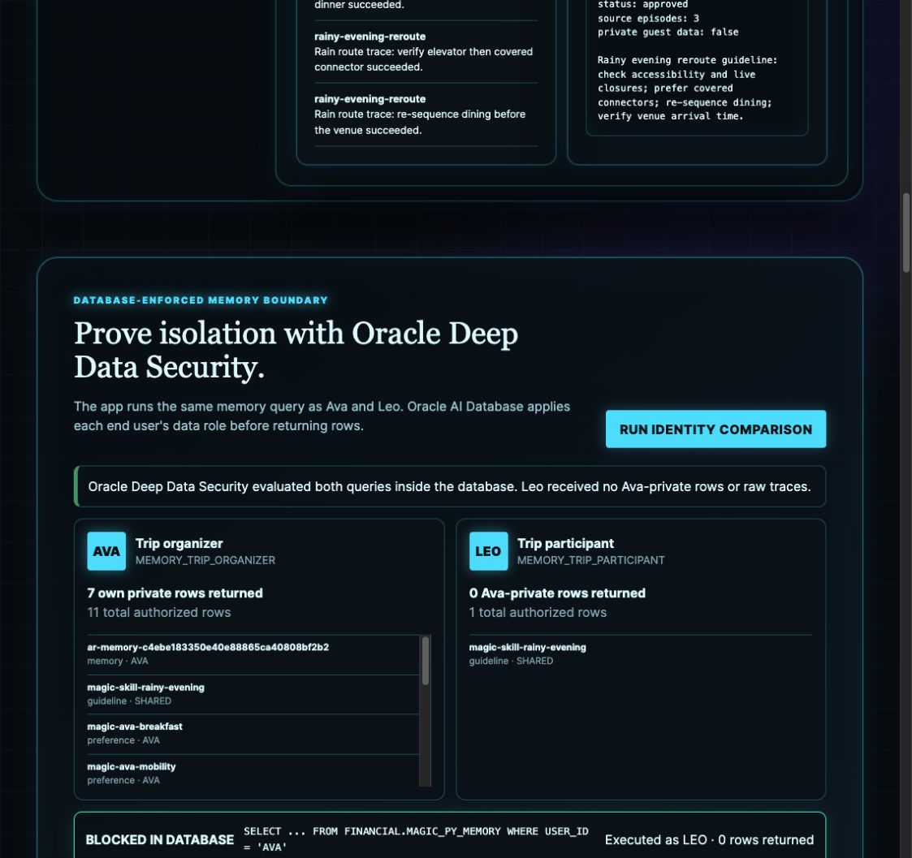
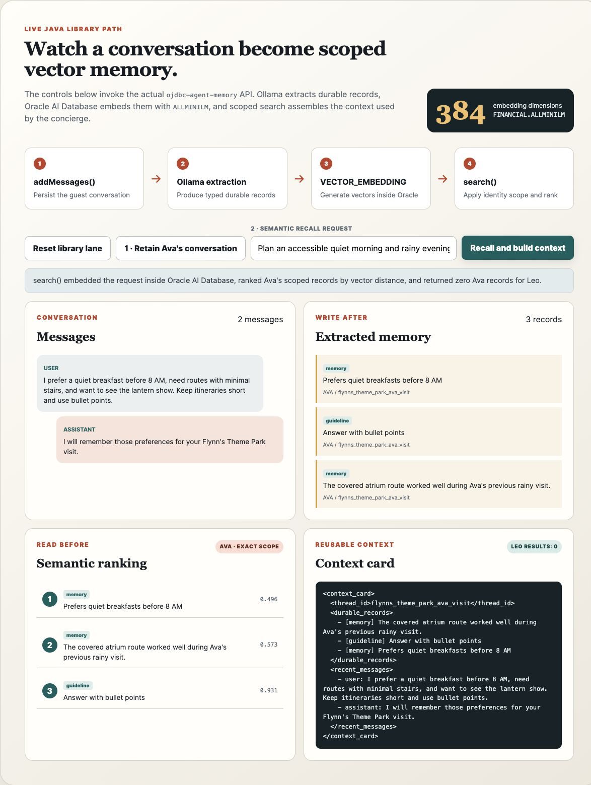
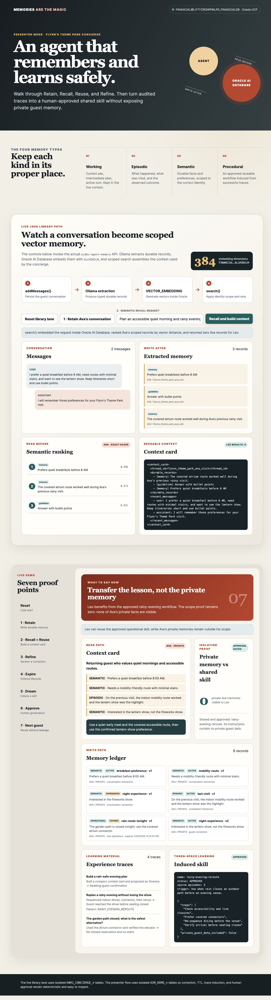
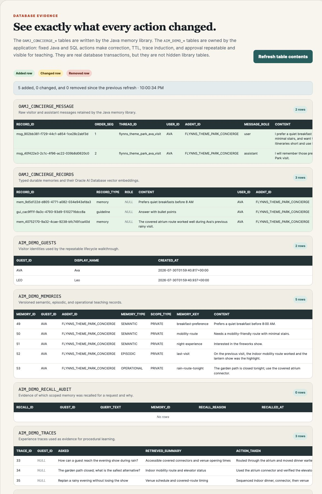

Oracle AI Database · AI agent memory · Continual learning
Memories Are the Magic: Build Governed AI Agent Memory with Oracle AI Database
Develop agents with working, episodic, semantic, and procedural memory; Retain, Recall, Reuse, and Refine; lifecycle controls; Deep Data Security; and human-approved learning on Oracle AI Database.
By Paul Parkinson · Updated August 10, 2026
An AI agent does not become stateful because its model has a long context window. It becomes stateful when useful experience is deliberately captured, scoped, recalled, corrected, expired, and reused. This demo makes that external memory loop visible: read before the turn, write after the turn, and keep Oracle AI Database as the durable, transactional governance boundary.
The included concierge for the fictional Flynn's Theme Park remembers visitor Ava's accessibility needs and preferences, builds a scoped context card, corrects a bad extracted fact, expires a temporary route closure, and turns repeated successful traces into a human-approved reusable skill. Oracle Deep Data Security gives Ava and Leo different database data roles, so Leo can use the approved shared skill while Oracle AI Database filters Ava's private rows and raw traces. A separate Memory Quest lane then combines those memory principles with SQL Property Graph, Oracle Spatial, AI Vector Search, and transactional gamification.
The model reasons in the loop; the external memory substrate makes experience durable, scoped, correctable, and auditable.
Complete 16-step walkthrough: follow Ava and Leo through governed memory, accessible map routing, transactional quest play, GraphRAG, and privacy-first AR. Every step shows the live application, the source method called, and the database content or change. The silent video includes burned-in captions and a downloadable SRT caption file.
Key Takeaways
An agent is a loop with state. Durable memory is an external computational substrate, not a property of a single prompt.
Memory engineering adds writes, correction, scope, retention, and governance to retrieval. Read-only retrieval is RAG; read plus write becomes a memory lifecycle.
Continual learning can begin in token space: retrieve better context, induce structured skills, and require approval before reuse. Model-weight updates are a later option, not the default.
The reference combines agent memory, a repeatable lifecycle path, a graph and Spatial Memory Quest, and an optional Lens Studio AR client with consent-scoped voice and media memory.
Oracle Deep Data Security enforces the end-user boundary in the database: Ava's organizer role can review and approve shared learning, while Leo's participant role receives only his rows and approved shared guidance.
Flynn's Theme Park Scenario at a Glance
This sequence is the complete application flow. Steps 0 through 7 exercise Oracle Agent Memory lifecycle operations and the Ava-versus-Leo Deep Data Security proof on MAGIC_PY_MEMORY. Steps 8 through 12 add the AIM_PARK_* graph, Spatial, vector, quest, and reward lane. Steps 13 through 16 add the optional Lens Studio and Spectacles AR flow. Every action produces an inspectable application or database transition.
Scenario event and observed behavior
Memory-core action
Oracle AI Database action
Memory principle shown
0. Reset both paths. Library memory becomes empty; only Ava and Leo remain in the lifecycle path.
OracleAgentMemory.clearAll() resets the library path. MemoryRepository.reset() resets the lifecycle path.
Deletes rows from OAMJ_CONCIERGE_MESSAGE and OAMJ_CONCIERGE_RECORDS. Clears the four mutable lifecycle tables in foreign-key-safe order while preserving Ava and Leo in AIM_DEMO_GUESTS, which are also graph vertices in the Memory Quest lane.
External state and isolation. The empty UI proves that browser state is not carrying memory between runs.
1. Retain Ava's current conversation and one seeded prior episode. The UI shows two messages, extracted preferences and guidelines, and the explicit covered-atrium memory.
addMessages() retains the current conversation and lets Ollama extract reusable facts and guidelines. addMemory() inserts the simulated prior-visit outcome so the demo can distinguish current conversation extraction from episodic history.
Inserts two rows into OAMJ_CONCIERGE_MESSAGE. Inserts extracted and explicit records into OAMJ_CONCIERGE_RECORDS; each insert calls VECTOR_EMBEDDING(allminilm USING ... AS DATA) to store a 384-dimensional native VECTOR.
Retain and write after. Semantic memory captures durable preferences; episodic memory captures what happened and whether it worked. The seeded rainy-visit episode is supplied as prior experience, not inferred from Ava's current sentence.
2. Recall a scoped plan for Ava. The context card includes her records and recent messages; the Leo scope check returns zero Ava records.
search() applies exact Ava, concierge-agent, and thread scope, then getContextCard() combines durable records with recent messages for the next model turn. The corresponding lifecycle walkthrough action uses MemoryRepository.recall() to expose an explicit recall audit.
A common-table expression embeds the request with VECTOR_EMBEDDING. Oracle ranks scoped rows from OAMJ_CONCIERGE_RECORDS with cosine VECTOR_DISTANCE. Recent messages are read from OAMJ_CONCIERGE_MESSAGE. The lifecycle action inserts one evidence row per selected memory into AIM_DEMO_RECALL_AUDIT.
Recall, reuse, and read before. Structured identity scope limits what may be considered before vector similarity decides relevance, while the audit shows why each record entered context.
3. Correct a remembered fact. Ava confirms lantern show, not fireworks; version 1 becomes superseded and version 2 becomes active.
The lifecycle path versions the visitor-confirmed fact inside one JDBC transaction.
Inserts version 2 into AIM_DEMO_MEMORIES, then updates version 1 to SUPERSEDED and sets SUPERSEDED_BY to the new MEMORY_ID.
Refine and correct. The agent uses the confirmed value on later turns while retaining an auditable history of what was wrong.
4. Expire a temporary closure. The row remains auditable but no longer enters future context.
expireOperationalMemory() closes the temporary operational record rather than deleting it.
Updates the matching row in AIM_DEMO_MEMORIES to STATUS='EXPIRED' and EXPIRES_AT=SYSTIMESTAMP. Later recall selects only active, unexpired rows.
TTL and lifecycle management. A live closure is short-lived operational memory, unlike a durable accessibility preference.
5. Induce a skill from three successful traces. Dream finds the repeated rainy-reroute pattern and proposes a pending procedure.
retain() records three synthetic, unscoped outcomes. dream() requires three records and rejects a trace if it has a user scope, lacks the explicit de-identification result, or contains an email address or phone number.
Stores the traces and one PENDING guideline in MAGIC_PY_MEMORY. The participant data grant does not expose raw traces or pending guidelines to Leo.
Episodic evidence becomes candidate procedural memory. The checks reduce risk but do not prove anonymity; human review is still required.
6. Approve the candidate procedure. Ava reviews the abstraction and activates it as trip organizer.
approve() calls DeepDataSecurityService.approve_guideline(). The update is executed as the Ava end user, not as an unrestricted pool identity.
MEMORY_TRIP_ORGANIZER authorizes UPDATE(METADATA) only on Ava's rows or shared learning rows in FINANCIAL.MAGIC_PY_MEMORY. Oracle AI Database records the approved status and approver.
Human governance plus least privilege. Approval authority is enforced where the data is written.
7. Reuse the skill for Leo. Leo receives the approved rainy-reroute procedure and zero Ava-private memories or raw traces.
next_day() retains exact memory scope and asks the DDS service to run the proof query as Leo.
MEMORY_TRIP_PARTICIPANT permits Leo's own rows plus shared guideline rows whose JSON status is approved. A direct WHERE USER_ID='AVA' probe returns zero in the database.
Safe procedural reuse without private-memory leakage. Similarity, graph relationships, or application mistakes cannot broaden this data grant.
8. Reset the Memory Quest lane. The park, party, knowledge, and quest definitions remain, while Ava's progress, badge, points, and reward history become empty.
ParkExperienceRepository.reset() clears only guest-specific quest results. It leaves reusable park topology and grounded knowledge intact.
One transaction deletes AIM_PARK_GUEST_BADGES, AIM_PARK_REWARD_AUDIT, and AIM_PARK_PROGRESS in foreign-key-safe order. AIM_PARK_GRAPH, places, paths, parties, quests, and vector knowledge remain queryable.
Separate durable world state from per-visitor experience state. Resetting the demonstration does not destroy the graph, spatial map, or reusable knowledge.
9. Plan Ava's accessible quest route. The 2D map highlights four graph edges from Park Entrance through Quiet Café, Covered Atrium, and Meeting Plaza to Lantern Garden. Summit Steps remains visibly inaccessible.
ParkExperienceRepository.plan() reads graph edges, filters closed or inaccessible relationships, and runs shortest-path logic over the permitted topology.
GRAPH_TABLE(AIM_PARK_GRAPH MATCH ... connects ...) supplies path relationships. SDO_GEOM.SDO_DISTANCE measures physical separation between entrance and destination, showing that route cost and straight-line distance answer different questions.
Graph plus Spatial reasoning. Relationships determine where the party can travel; geometry determines where places are and how far apart they are.
10. Start Covered Constellations. Ava and Leo appear as a consent-bounded party, the three ordered checkpoints become active, and the reward audit records the start with zero points.
ParkExperienceRepository.startQuest() checks for existing progress and creates Ava's active quest state without merging Ava's and Leo's private memory scopes.
Inserts one AIM_PARK_PROGRESS row and one QUEST_STARTED row in AIM_PARK_REWARD_AUDIT in the same transaction. Party membership comes from member_of edges with CONSENT_UNTIL.
Relationship does not erase authorization scope. Guests may share a quest while private agent memory remains identity-scoped.
11. Complete three checkpoints and award the badge. Quiet Café, Covered Atrium, and Lantern Garden change to completed. The UI finishes at 400 points with the Lantern Pathfinder badge and four audit events.
ParkExperienceRepository.completeNextStep() locks Ava's progress row, validates the next ordered checkpoint, and performs each state transition atomically.
The first two transactions add 50 points each. The final transaction adds 300 points, changes progress to COMPLETED, inserts LANTERN_PATHFINDER into AIM_PARK_GUEST_BADGES, and records QUEST_COMPLETED.
Transactional gamification. Progress, points, badges, and audit evidence cannot disagree because each checkpoint commits as one database unit.
12. Retrieve grounded park knowledge and expand it through the graph. The app displays three vector-ranked evidence cards and seven connected-place or quest chips before presenting the grounded answer.
ParkExperienceRepository.graphRag() preserves vector distance and calls graph expansion for every retrieved place instead of hiding the evidence inside generated prose.
VECTOR_EMBEDDING(ALLMINILM USING ...) embeds the request; cosine VECTOR_DISTANCE ranks AIM_PARK_KNOWLEDGE. GRAPH_TABLE then follows connects and quest_step edges around each vector hit.
GraphRAG combines semantic relevance with explicit relationships. Vector search finds likely evidence; graph traversal adds connected facts and explainable structure.
13. Start a private AR session. The simulated Spectacles view shows camera sensing status, recording off, precise location off, and a seven-day retention choice.
ArExperienceService.start_session() creates a short-lived token and records the guest's separate sensing, recording, location, and retention choices.
Inserts one scoped row into AIM_AR_SESSIONS and one SESSION_STARTED event into AIM_AR_AUDIT.
Consent is capability-specific. AR sensing is not described as camera off, and recording remains disabled until the guest explicitly opts in.
14. Say “remember this.” The guest confirms that the quiet Lantern Garden entrance and covered route worked well.
The Lens uses Spectacles ASR on hardware; the browser simulator supplies the same confirmed text. add_memory() writes it with exact guest, agent, and AR-thread scope plus TTL.
Oracle Agent Memory stores the scoped observation in MAGIC_PY_MEMORY; AIM_AR_AUDIT records its memory ID, source, session, and purpose.
Perception becomes memory only after confirmation. A transient camera or speech signal is not automatically durable.
15. Index an opted-in media description. With recording consent enabled, the demo submits a video transcript or image caption, not raw video by default.
ArExperienceService.remember_media() verifies the active session and recording consent before accepting the description and optional HTTPS object URI.
Inserts the transcript into AIM_AR_MEDIA, creates a 384-dimensional vector with VECTOR_EMBEDDING(ALLMINILM ...), assigns an expiration, and writes MEDIA_INDEXED to AIM_AR_AUDIT.
Data minimization and lifecycle. Searchable meaning can be retained separately from raw media, with explicit consent and bounded retention.
16. Search media memory semantically. “Where was the accessible constellation artwork?” finds the covered atrium transcript even though the words differ.
The AR API authenticates the short-lived session and restricts retrieval to the same guest before returning overlay-ready results.
Oracle AI Database embeds the question, applies guest, consent, and expiration predicates, ranks AIM_AR_MEDIA by cosine VECTOR_DISTANCE, and audits MEDIA_SEARCHED.
Scope before similarity. Semantic relevance never overrides identity, consent, or expiration.
How the Two Flows Form One Gamified Learning Loop
The walkthrough keeps the governed-memory and Memory Quest controls separate so each concept is easy to teach. A production concierge can combine them in one continuous experience:
Recall: Ava asks for a rainy-evening activity. Her scoped memory supplies the minimal-stair, quiet-space, and lantern-show preferences.
Plan and play: graph and Spatial queries turn those preferences into route constraints. The app starts Covered Constellations and commits each checkpoint, point award, and badge transactionally.
Retain the outcome: completion, route choice, timing, and Ava's feedback become a scoped episode. The badge is evidence of task completion, not proof that every guest should receive the same plan.
Learn under controls: repeated successful, minimized outcomes can induce a candidate rainy-route procedure. Privacy checks and human approval govern the general lesson, while Deep Data Security keeps Ava's private facts and raw traces from Leo.
Reuse: Leo can receive the approved procedure and a quest adapted to his own memory. His points, route, and rewards remain separate from Ava's.
The same pattern also supports family party quests that preserve individual accessibility needs, seasonal operations quests that reward safe reroutes, and discovery quests that use GraphRAG to reveal location-aware lore.
Add an Optional Lens Studio and Spectacles AR Experience
The AR client is a presentation layer over the same governed services, not a second memory system. Lens Studio 5.15.4 can preview route arrows, clues, checkpoint state, privacy status, and HTTPS calls. On Spectacles hardware, the ASR Module can transcribe a guest saying “remember this,” while the Internet Module sends the confirmed text to the Oracle Agent Memory service.
The implementation keeps four boundaries visible:
Sensing is not recording: the status overlay reports AR camera sensing even when media recording is off.
Durability requires confirmation: speech or perception remains transient until the guest confirms the memory write.
Media is minimized: the default path embeds an opted-in transcript or caption. Raw video storage is optional and represented only by an HTTPS object URI.
Scope precedes similarity: guest identity, consent status, session expiration, and record TTL are applied before semantic ranking.
AIM_AR_SESSIONS stores separate camera-sensing, media-recording, location-sharing, and retention choices. AIM_AR_MEDIA stores consented descriptions, optional object references, native vectors, and expiration. AIM_AR_AUDIT records session, memory, media, and search events. Private “remember this” observations are stored through Oracle Agent Memory with exact guest, concierge-agent, and AR-thread scope.
The browser simulator and database/API paths work without hardware. Lens Studio Preview can model the overlay and HTTPS contract, while ASR, camera frames, permission prompts, tracking, outdoor visibility, comfort, battery, heat, and venue rules require actual Spectacles and park testing. The responsive browser map remains the non-AR accessibility fallback.
The prior rainy-visit episode is a seeded demonstration record, not evidence of an earlier live session. Retain stores that simulated episode plus three separate synthetic, generalized rainy-route outcomes for skill induction. These unscoped outcomes pass the demo's privacy gate and remain reviewable evidence rather than automatically anonymous data.
From Prompt Engineering to Context Engineering to Memory Engineering
Agent memory combines models, extraction, embeddings, retrieval, and persistent storage so an agent can retain, recall, update, and forget information while maintaining continuity across long-horizon tasks. Memory engineering is the discipline of designing and operating that lifecycle so retained experience remains useful, scoped, current, and governable over time.
The application pattern has evolved from single-turn LLM chatbots, through RAG, to automated or human-in-the-loop multistep workflows with limited autonomy, and finally to agentic applications that combine four capabilities: memory, actions or tools, perception of inputs such as text, video, or audio, and model-based reasoning.
Prompt engineering addresses instruction sensitivity by shaping linguistic patterns for one turn.
Context engineering works within bounded, position-sensitive context windows by retrieving, organizing, summarizing, compacting, or offloading the right information for one inference. Stable project facts and conventions may resemble AGENTS.md or CLAUDE.md, while reusable procedures may resemble SKILL.md.
Memory engineering overcomes statelessness by governing what persists across interactions, how it is recalled, and when it is corrected, consolidated, expired, or forgotten.
The memory lifecycle is easiest to remember as the four Rs:
Retain: extract and store useful facts, episodes, and operational state.
Recall: search inside the correct user, agent, tenant, status, and time scope.
Reuse: assemble a compact context card for the next turn.
Refine: correct, consolidate, version, expire, or delete state.
Map the Four Rs to Oracle Agent Memory Source Methods
OracleAgentMemory configures the shared store, schema, extraction, embedding, and search services and creates scoped OracleThread instances; OracleThread binds user, agent, and thread identity to message, memory, search, and context-card operations.
The API maps the first three Rs directly to OracleThread. Refinement uses the library's delete and add primitives when a stored memory must be replaced.
Refine uses delete followed by add because this implementation does not expose a single updateMemory(...) method. RAG retrieves existing knowledge; agent memory adds the write-back and lifecycle needed to change what the system knows from later interactions.
Why Agents Forget
A stateless agent repeatedly re-onboards users, repeats failed approaches, and forgets what produced a good outcome. Trust cannot compound because experience disappears at the end of the call. A large prompt can postpone the problem, but it does not provide identity scope, correction, deletion, expiration, transaction boundaries, or a durable audit history.
An agent is still a loop: observe, plan, act, and evaluate. The model supplies reasoning inside that loop. External memory acts as a computational exocortex across loops, preserving selected facts and outcomes after the model invocation ends. The distinction matters because context-window contents are transient, while database records can have owners, versions, policies, and an audit trail.
The durable advantage is not one clever prompt. It is accumulated, governed experience that the right agent can recall at the right time.
The Four Memory Types
Memory type
Question it answers
Demo example
Developer analogy
Lifecycle
Working
What am I doing now?
“Build Ava a rain-safe evening plan.”
RAM or the active context window.
Active turn; not inserted into the durable memory table.
Episodic
What happened before?
The indoor mobility route worked and the lantern show was the highlight.
Distilled interaction history.
Durable event plus outcome; useful learning material.
Semantic
What facts should I know?
Ava prefers a quiet breakfast and needs a minimal-stair route.
Project facts and conventions in CLAUDE.md or AGENTS.md.
Versioned, correctable, identity-scoped fact.
Procedural
How should I handle this pattern?
rainy-evening-reroute: “When rain closes a path, check accessibility, choose covered connectors, resequence dining, and verify arrival time.”
SKILL.md or agent skills, loaded through progressive disclosure.
Induced from successful traces; inactive until a person approves it.
These are conceptual analogies rather than storage rules. A file such as CLAUDE.md or AGENTS.md can contain both semantic facts and procedural instructions, so each entry should be classified by what it communicates and how the agent uses it.
These categories prevent a common design failure: treating every transcript fragment as equally durable. A live closure should expire; a confirmed accessibility preference can live longer; a reusable operational skill should contain the general lesson, not the original guest's private data.
What the Demo Actually Implements
Browser presentation UI
│
├── Live library lane
│ ojdbc-agent-memory · Ollama extraction
│ in-database ALLMINILM vector embeddings
│ scoped semantic search · context cards
│
└── Repeatable lifecycle teaching path
visible SQL lifecycle · versions · audit
traces · approval-gated procedural memory
│
▼
Oracle AI Database
├── durable, identity-scoped memory
├── AI Vector Search in the live memory library lane
├── relational lifecycle and JSON metadata
└── correction, expiry, trace, and approval evidence

The agent loop reads governed memory while assembling context and writes selected messages, memories, traces, and outcomes after acting. Oracle AI Database provides the durable boundary around otherwise transient model execution.
What Enters the Model Context?
The context assembler selects memory for each turn rather than sending the entire memory store to the model:
Working memory: the current request, recent conversation, and active task state provide immediate context.
Semantic memory: relevant visitor facts and preferences are recalled within the authorized identity scope. Frequently useful facts may appear often, but semantic memory is not automatically sent in full on every turn.
Procedural memory: an applicable approved guideline or skill is included only when the current task needs that procedure.
Episodic memory: relevant prior experiences and outcomes are selected, commonly through scoped vector search, when they can improve the current decision.
The resulting context card must also fit the model's token budget. Structured authorization and lifecycle filters decide what the agent may consider before vector similarity and task relevance decide what is useful.
Live memory library
The ojdbc-agent-memory lane persists messages, asks Ollama to extract typed records, creates vectors with the database-resident ALLMINILM model, performs identity-scoped semantic search, and builds a context card.
Transparent lifecycle mechanics
The separate AIM_DEMO_* path uses fixed application, JDBC, UCP, SQL, and JSON operations to make correction history, TTL, recall auditing, traces, and approval state repeatable and easy to inspect.
The seven-step teaching path uses fixed inputs and explicit application and SQL transitions so a live talk remains repeatable. The live memory library path uses Ollama for extraction and Oracle AI Database for vector generation and similarity ranking. Neither claims that the model retrained itself. The library calls, database behavior, search, transactions, identity scope, TTL, trace persistence, pooling, and human approval are real.
Memory Library Configuration
The builder receives the UCP data source, selects isolated table names, enables message persistence and memory extraction, and supplies the database embedder and Ollama adapter.
The demo calls createThread(), addMessages(), addMemory(), search(), and getContextCard(). Exact user, agent, and thread values make the private recall boundary visible.
Agent Framework Integrations
Oracle Agent Memory sits around the agent loop: recall scoped context before execution, then retain selected messages, memories, and outcomes afterward. Integration options include LangGraph, the Claude Agent SDK, the OpenAI Agents SDK, LangChain4j, Spring AI, Oracle WayFlow, Semantic Kernel, MCP clients or servers, and custom harnesses. Each integration uses framework lifecycle hooks, tools, services, or direct library calls; the framework orchestrates the agent while Oracle Agent Memory provides durable, scoped memory.
Database Tables and Objects Used by Oracle Agent Memory and Agent
There are three intentionally separate object groups. Oracle Agent Memory uses the message and durable-record tables. The agent lifecycle lane uses AIM_DEMO_* tables for history, expiry, traces, approval, and audit. The Memory Quest lane uses AIM_PARK_* tables for graph, spatial, vector, and transactional game state. The scenario table above links directly to the memory tables below.
ACTIVE, SUPERSEDED, and EXPIRED are application-defined values in AIM_DEMO_MEMORIES.STATUS. Oracle Agent Memory managed tables use their own lifecycle model for messages and typed records.
OAMJ_CONCIERGE_MESSAGE: Persistent Conversation History
Field
Type
Purpose
RECORD_ID
VARCHAR2(128)
Primary identifier for the stored message.
ORDER_SEQ
NUMBER
Sequence used to reconstruct message order.
THREAD_ID
VARCHAR2(128)
Conversation scope.
USER_ID
VARCHAR2(128)
User identity scope.
AGENT_ID
VARCHAR2(128)
Agent identity scope.
SPACE_ID
VARCHAR2(128)
Optional broader workspace or shared scope.
MESSAGE_ROLE
VARCHAR2(32)
Message origin, such as user, assistant, or system.
CONTENT
CLOB
Raw message text.
TIMESTAMP
TIMESTAMP WITH TIME ZONE
Message time, defaulting to the database system timestamp.
METADATA
CLOB
Optional application metadata.
CREATED_AT
TIMESTAMP WITH TIME ZONE
Database row creation time.
The library creates OAMJ_CONCIERGE_MESSAGE_SCOPE_IX over user, agent, thread, sequence, and creation time for scoped, ordered retrieval.
OAMJ_CONCIERGE_RECORDS: Durable Memories and Embeddings
Field
Type
Purpose
RECORD_ID
VARCHAR2(128)
Primary identifier for the durable record.
RECORD_TYPE
VARCHAR2(32)
Extracted or assigned category described below.
ROLE
VARCHAR2(32)
Optional originating message role.
CONTENT
CLOB
Extracted or explicitly added durable memory text.
USER_ID
VARCHAR2(128)
User identity scope.
AGENT_ID
VARCHAR2(128)
Agent identity scope.
THREAD_ID
VARCHAR2(128)
Conversation scope.
EMBEDDING
VECTOR
Embedding used for semantic similarity search.
CREATED_AT
TIMESTAMP WITH TIME ZONE
Database row creation time.
The library creates OAMJ_CONCIERGE_RECORDS_SCOPE_IX over user, agent, thread, record type, and creation time. The demo generates each embedding with the database-resident ALLMINILM model.
How RECORD_TYPE Maps to Memory Types
Oracle Agent Memory and the conceptual memory model use related but different taxonomies. The four durable values written to OAMJ_CONCIERGE_RECORDS.RECORD_TYPE are preference, fact, guideline, and memory. They describe what the extractor persisted. Working, episodic, semantic, and procedural describe how the application uses and governs remembered information.
RECORD_TYPE
What it means in Oracle Agent Memory
Closest conceptual memory type
Flynn's Theme Park example
preference
A like, dislike, desired recommendation, dietary choice, or response-style preference.
Semantic memory. It is durable information about the visitor.
Ava prefers a quiet breakfast and short bullet-point itineraries.
fact
Stable factual state, such as a name, city, accessibility need, or other current visitor fact.
Semantic memory. The fact should be scoped, versioned, and correctable.
Ava needs routes with minimal stairs.
guideline
An instruction that the assistant should follow in future responses.
Procedural-like memory. It guides behavior, but an extracted visitor guideline is not automatically a globally approved skill.
Keep Ava's itineraries short and use bullet points.
memory
Durable context that does not fit the more specific preference, fact, or guideline categories.
Semantic or episodic memory, depending on content and provenance.
The covered atrium route worked well during Ava's previous rainy visit is episodic even though its stored record type is memory.
message record interface only
A conversation message returned when the library presents recent messages and durable records through one record interface. It is not persisted in OAMJ_CONCIERGE_RECORDS.RECORD_TYPE; raw messages reside in OAMJ_CONCIERGE_MESSAGE.
Recent or working context. It becomes durable memory only when extraction creates a separate record.
Ava's current request and the concierge response appear beside extracted records in the context card.
The extractor prefers preference, fact, or guideline over generic memory. The demo searches all four durable types together; message appears only when the API presents recent conversation and durable records together.
Working memory is not a durable RECORD_TYPE. The approved shared procedure in AIM_DEMO_SKILLS is application-governed procedural memory, not a library-extracted guideline. The application-specific OPERATIONAL value in AIM_DEMO_MEMORIES.MEMORY_TYPE is not an Oracle Agent Memory record type.
The remaining application-owned database objects are:
Object
Created by
Purpose
AIM_DEMO_GUESTS
Agent application
Visitor identities used by the lifecycle walkthrough.
AIM_DEMO_MEMORIES
Agent application
Semantic, episodic, and operational records with visitor and agent scope, version, status, TTL, source, supersession link, and JSON metadata.
AIM_DEMO_RECALL_AUDIT
Agent application
Which memory was recalled, for whom, for which query, when, and why.
AIM_DEMO_TRACES
Agent application
Question, retrieved evidence, action, outcome, success, and shareable pattern used as continual-learning evidence.
AIM_DEMO_SKILLS
Agent application
Pending and approved procedural memories, generalized JSON instructions, source-episode count, approver, and approval time.
AIM_PARK_PARTIES AIM_PARK_PARTY_MEMBERS
Memory Quest application
Party vertices and consent-bounded guest-to-party edges. Ava and Leo are related for the current experience without merging their private memory scopes.
AIM_PARK_PLACES AIM_PARK_PATHS
Memory Quest application
Park vertices with SDO_GEOMETRY locations and directed connectivity edges with distance, accessibility, cover, and open or closed status.
AIM_PARK_QUESTS AIM_PARK_QUEST_STEPS
Memory Quest application
Quest definitions and ordered quest-to-place graph edges for the three Covered Constellations checkpoints.
AIM_PARK_KNOWLEDGE
Memory Quest application
Grounded park facts and lore stored with 384-dimensional native VECTOR embeddings for GraphRAG retrieval.
Transactional checkpoint state, badge ownership, point deltas, and immutable demonstration evidence.
AIM_PARK_GRAPH
Memory Quest application
SQL property graph over guests, parties, places, quests, badges, memberships, paths, quest steps, and earned badges.
The application also creates sequences for lifecycle, path, quest-progress, badge, and reward identifiers. The ALLMINILM ONNX model is loaded once into the database, but it is a database model rather than an application table. The library does not create separate user, agent, or thread tables; those identities are stored as scope columns on messages and records.
Memory Quest: Graph, Spatial, Gamification, and GraphRAG
The extension deliberately assigns one job to each database capability:
Capability
Question answered
Verified implementation
SQL Property Graph
Who is in the consented party? Which places connect? Which places belong to this quest?
GRAPH_TABLE matches member_of, connects, and quest_step edges in AIM_PARK_GRAPH.
Oracle Spatial
How far apart are two physically positioned places?
SDO_GEOMETRY stores local park coordinates and SDO_GEOM.SDO_DISTANCE compares entrance and destination separation.
AI Vector Search
Which grounded park facts best match the visitor's request?
VECTOR_EMBEDDING embeds the request and cosine VECTOR_DISTANCE ranks three knowledge records.
GraphRAG
What connected places and quest context surround each retrieved fact?
The application expands each vector hit through property-graph paths and quest edges, retaining both retrieval distance and relationship evidence.
Transactions
Did progress, points, badges, and audit agree?
A row lock protects quest progress; each checkpoint commits progress, points, and audit together. The final transaction also awards the badge.
This is not a 3D simulation. The app renders a responsive 2D SVG map from the same X_M and Y_M coordinates stored with each spatial place. A 3D or game-engine client could consume the APIs later, but it is unnecessary for demonstrating the data and agent patterns.
The party graph models consented guest relationships without weakening memory isolation. GraphRAG begins with semantically relevant park knowledge, then follows place and quest relationships to add grounded context. The same graph technology serves distinct policy and retrieval purposes.
Why Oracle AI Database Fits the Memory Substrate
Atomic correction: the app inserts a new fact version and supersedes the old one in the same transaction.
Structured scope before similarity: guest, agent, status, and expiration predicates are applied before context is built. At larger scale, Oracle AI Vector Search can add semantic or hybrid ranking alongside relational filters.
Relational plus JSON: enforceable lifecycle columns coexist with JSON metadata and skill instructions.
Converged graph, spatial, and vector operations: relationship traversal, physical distance, and semantic retrieval stay near the transactional source of truth instead of requiring three independently synchronized stores.
Operational governance: Oracle Deep Data Security applies row, column, and cell-level data grants using the active end-user identity, while Unified Auditing and fine-grained auditing can retain access evidence.
Make the Shared-Learning Boundary Enforceable with Deep Data Security
The sentence “three successful de-identified traces produced a generalized guideline” is possible only if those traces have already been minimized and generalized. In this demo they are synthetic, contain no user identifier, carry an explicit de-identification result, pass a small direct-identifier check, and must reach a three-trace threshold. The generated guideline remains pending until Ava approves it.
An application-supplied privacy_safe=true value cannot establish anonymity. Rare combinations can reidentify a person, vector embeddings preserve meaning, and malicious or low-quality traces can poison a learned procedure. De-identified means identifiers were reduced under a defined process; it does not mean the record is anonymous or safe for every reuse.
The app now demonstrates the database boundary on the real FINANCIAL.MAGIC_PY_MEMORY table:
Ava, trip organizer:MEMORY_TRIP_ORGANIZER can read Ava's own rows plus shared traces and guidelines, and can update approval metadata on eligible rows.
Leo, trip participant:MEMORY_TRIP_PARTICIPANT can read Leo's own rows and approved shared guidelines. It cannot read Ava's private rows, raw traces, pending guidelines, or the excluded metadata column.
Negative proof: the app executes a direct query for USER_ID='AVA' as Leo. Oracle AI Database returns zero rows because the data-grant predicate is evaluated in the database.
CREATE OR REPLACE DATA GRANT FINANCIAL.MEMORY_PARTICIPANT_ACCESS
AS SELECT (RECORD_ID, USER_ID, AGENT_ID, MEMORY_TYPE,
CONTENT, EXPIRES_AT, CREATED_AT)
ON FINANCIAL.MAGIC_PY_MEMORY
WHERE UPPER(USER_ID) = UPPER(ORA_END_USER_CONTEXT.username)
OR (USER_ID IS NULL
AND MEMORY_TYPE = 'guideline'
AND JSON_VALUE(METADATA, '$.status') = 'approved')
TO memory_trip_participant;
Risk
Oracle control
What remains outside that control
Cross-user or over-privileged reads
Deep Data Security applies end-user data roles and row, column, and cell grants during SQL execution.
Correct identity issuance, role assignment, token or local-user lifecycle, and policy testing.
Trace-level de-identification, free-text review, purpose limitation, consent, and reidentification analysis.
Unexplained access or changes
Unified Auditing, fine-grained auditing, and Data Safe Activity Auditing can retain and centralize database activity evidence.
Alert triage, reviewer accountability, and incident response.
Poisoned or unsafe learned procedures
Transactions, constraints, roles, and approval-state predicates make promotion controlled and reversible.
Quality evaluation, prompt-injection screening, source trust, and human judgment.
Stale or over-retained memory
Oracle Agent Memory TTL and database timestamps support bounded retrieval and cleanup workflows.
Choosing lawful retention periods and verifying deletion from derived summaries, exports, and backups.
A browser filter or application WHERE clause can be omitted by a bug or an AI-generated query. Deep Data Security replaces the pooled session's broad domain with the end user's identity and data roles, so every SQL operation on the protected object is evaluated against the data grants.
The local comparison service binds to 127.0.0.1 and runs both demonstration identities on one screen. A production endpoint must authenticate one caller, attach only that caller's end-user security context, and never expose an impersonation or cross-identity comparison API. Cross-origin access is disabled by default; configure one explicit AR_ALLOWED_ORIGIN only when the AR client requires it.

Live database proof: the same memory query returns role-appropriate rows for Ava and Leo, and the deliberate Leo query for Ava's private rows returns zero.
Set Up and Run the Demo
The demo uses an Oracle Database user and can reuse the repository's financial database wallet. The verified run shown below connected as FINANCIAL. Keep credentials and the wallet outside source control.
1. Configure the Database Connection
If financial/setup/.env already works, the runner reuses it. Otherwise:
cd memory
cp .env.example .env
# Edit .env with DB_USERNAME, DB_PASSWORD, DB_SERVICE, and TNS_ADMIN.
# Do not commit the populated file or wallet.
2. Configure the Live Deep Data Security Proof
Start the app once so the memory table exists. Then run the one-time bootstrap as the financial database ADMIN user. It creates local end users AVA and LEO, maps their two data roles, and creates row, column, and update grants on MAGIC_PY_MEMORY:
cd memory/deep-data-security
export DDS_ADMIN_PASSWORD='<financial database ADMIN password>'
./run.sh
The local demo defaults both end-user passwords to the existing DB_PASSWORD. For separate demo credentials, configure DDS_AVA_PASSWORD and DDS_LEO_PASSWORD before both bootstrap and app startup. Production should use individually managed identities or IAM tokens. See memory/deep-data-security/README.md and the equivalent setup_local_dds.sql.
3. Optional: Prepare Ollama and the Database Embedding Model
Skip this step for the primary browser walkthrough, which uses the public memory package and requires no external model key. Use it only when demonstrating the separate extraction-focused reference lane. That lane uses Ollama for typed-memory extraction and the database-resident ALLMINILM ONNX model for 384-dimensional embeddings:
Load ALLMINILM once for the connected database user, then verify the full library examples if desired:
cd memory/test-utils
./load-allminilm.sh
./run-local.sh
The ojdbc-agent-memory dependency used here is a proof-of-concept snapshot rather than a public package artifact. The runner expects a local library clone and accepts its location through OAM_LIBRARY_DIR.
4. Run the Complete Browser App
The top-level runner starts the complete memory, graph, Spatial, vector, transaction, gamification, and AR demonstration. It creates only missing objects and never drops the schema. From the repository root, open one terminal and run:
cd memory
./test.sh
./run.sh
Wait for the listening message, then open http://127.0.0.1:8092. Keep the first terminal running. In a second terminal, optionally execute the automated end-to-end proof:
cd memory
./smoke-test.sh
In the browser, use the numbered controls in this order: memory steps 0 through 7, Memory Quest steps 1 through 4, and AR steps 1 through 4. After Retain, Dream, Approve, and Next Guest, click Run identity comparison in the Deep Data Security panel. Ava should see her authorized review material; Leo should show zero Ava-private rows and only the approved shared guideline.

Actual memory library run: two messages became typed durable records, Oracle AI Database ranked them by vector distance, and the exact-scope isolation check returned zero Ava records for Leo.

The repeatable lifecycle path makes correction, TTL, trace induction, approval, and the final next-day scope proof easy to narrate.
To inspect the lifecycle path's versions, recall audit, traces, and approval record from SQLcl, run memory/database/inspect_demo.sql after the browser walkthrough. The app now also shows all table contents at the bottom of the page and highlights changes after every action or manual refresh. Query the two library-managed tables only for presentation and troubleshooting; application code should use the library APIs instead of depending on their internal schema.

The table inspector queries Oracle AI Database without reloading the page. Green rows were added since the previous refresh; changed rows use yellow and removed rows remain temporarily visible in red.
Open the Optional Spectacles experience section and follow its four numbered steps. First choose consent and retention, then start a private session. Second, retain the confirmed Lantern Garden observation. Third, enable recording consent in a new session and index the supplied media description. Fourth, search for the accessible constellation artwork. The result card explains each outcome without exposing credentials or raw protocol data. Refresh the database inspector to see the managed memory row plus AIM_AR_SESSIONS, AIM_AR_MEDIA, and AIM_AR_AUDIT.
5. Optional: Import the Lens Studio 5.15.4 Source Kit
Open memory/spectacles-lens and follow its project setup. Mark the project Made for Spectacles, import the TypeScript controllers, add the Internet and ASR modules, bind the overlay text components, and replace the placeholder API address with an approved public HTTPS tunnel to port 8092. Restrict AR_ALLOWED_ORIGIN and replace the demonstration token with production authentication before sharing the Lens.
The repository provides a source kit rather than a hardware-tested Lens Studio project. The Internet API can work in Preview when the device override is Spectacles; ASR and camera frames require Spectacles hardware.
Live Memory Library Walkthrough
Use this three-action lane first when presenting the app. It connects the memory concepts directly to the library calls and the visible database result.
Reset library lane: clears only the isolated OAMJ_CONCIERGE_* records. Point out that browser refreshes do not recreate memory because Oracle AI Database is the state source.
Retain Ava's conversation:addMessages() persists the user and assistant messages. Ollama extracts durable memory, preference, and guideline records. Oracle Agent Memory asks Oracle AI Database to create an embedding for each record with VECTOR_EMBEDDING.
Recall and build context:search() embeds the request in the database, applies Ava's exact identity scope, and ranks records by vector distance. The generated context card combines durable records with recent messages. A separate exact Leo search returns zero Ava records.
Memory is not merely saved chat. The write path extracts typed, durable state. The read path applies authorization scope before semantic ranking, then returns compact context for the next model turn. Continual learning begins when governed experience changes future context.
Demo Walkthrough
After the live library lane, use the UI's numbered buttons in order to explain the broader governed lifecycle. Each screen displays a short cue; the following script provides the narration, action, implementation detail, and visible proof.
0 Reset: Show the Stateless Starting Point
“A model call does not carry durable experience by itself. At this cold start, Ava and Leo exist, but the agent has no saved facts, traces, or reusable skills.”
Action: Click Reset. Notice that the memory ledger, traces, and skill are empty.
What happens: The application deletes rows from AIM_DEMO_RECALL_AUDIT, AIM_DEMO_SKILLS, AIM_DEMO_TRACES, and AIM_DEMO_MEMORIES. It preserves Ava and Leo in AIM_DEMO_GUESTS, inserting either identity only if it is missing.
Proof to point at: the memory ledger, trace panel, and skill card are empty. Browser state is not the memory source.
1 Retain: Write Useful Experience
“We retain selected state, not an undifferentiated transcript. Working memory stays in the active turn. Semantic preferences, an episodic outcome, and one temporary operational fact become durable records.”
Action: Click 1 · Retain. Notice the typed memory ledger and three experience traces.
What happens: The application writes four durable Ava memories and one temporary route fact, then stores three synthetic, unscoped successful outcomes with explicit de-identification metadata for later privacy review.
Proof to point at: every ledger row shows type, PRIVATE scope, source, version, status, and an expiration time where appropriate.
2 Recall + Reuse: Read Before the Turn
“The system does not search all memory. It first narrows by guest, agent, active status, and TTL, then assembles a compact context card for this request.”
Action: Click 2 · Recall + Reuse. Notice the context card and the deliberately imperfect fireworks fact.
What happens: The application reads AIM_DEMO_MEMORIES with guest, agent, ACTIVE-status, and TTL predicates, then inserts one evidence row per selected memory into AIM_DEMO_RECALL_AUDIT.
Proof to point at: the context card contains Ava's facts and the live route closure. It also exposes a deliberately imperfect extracted fact, fireworks, so the next step can demonstrate correction.
3 Refine: Correct Without Losing History
“Ava corrects us: lantern show, not fireworks. Durable memory must accept correction as data, not hope that a later prompt masks the error.”
Action: Click 3 · Refine. Notice that version 1 becomes superseded and version 2 becomes active.
What happens: In one transaction, the application locks version 1 in AIM_DEMO_MEMORIES, inserts version 2 into the same table, marks version 1 SUPERSEDED, and links its SUPERSEDED_BY column to the replacement.
Proof to point at: both record versions remain in the ledger, but only the visitor-confirmed lantern memory is active for later recall.
4 Expire: Enforce the Memory Lifecycle
“Useful tonight does not mean true tomorrow. Retention policy is part of memory quality.”
Action: Click 4 · Expire. Notice that the operational row remains visible but changes to EXPIRED.
What happens: The application updates the temporary route row in AIM_DEMO_MEMORIES to STATUS='EXPIRED' and sets EXPIRES_AT; later reads of that table exclude it through the lifecycle predicate.
Proof to point at: the temporary fact remains auditable in the ledger but cannot influence the next context card.
5 Dream: Turn Traces into a Candidate Skill
“Traces are raw material for continual learning, but a privacy label is not proof. These synthetic examples are unscoped, identifier-checked, aggregated, and still require review.”
Action: Click 5 · Dream, then click Run identity comparison. Notice the pending guideline is visible to Ava but absent from Leo's results.
What happens:dream() searches MAGIC_PY_MEMORY for three successful trace records, rejects any record with a user scope, failed de-identification result, email address, or phone number, and stores one PENDING guideline. The participant data grant filters the traces and pending guideline from Leo.
Proof to point at: the DDS panel shows Ava's review material, zero raw traces for Leo, and a database-enforced cross-user probe. The procedure remains pending and no model weights changed.
This demo has no sleep() method or background scheduler. Clicking Dream synchronously sends POST /api/actions/dream, and the service handler invokes the repository's dream operation. A production system can schedule equivalent induction work asynchronously.
6 Approve: Put Governance in the Learning Loop
“The dream loop may propose a lesson; it may not silently promote one. Approval is authorized by Ava's database identity, not only by a UI button.”
Action: Click 6 · Approve. Refresh the DDS proof and database table contents.
What happens:DeepDataSecurityService.approve_guideline() connects as the Ava end user. MEMORY_TRIP_ORGANIZER permits UPDATE(METADATA) on the shared guideline in FINANCIAL.MAGIC_PY_MEMORY, changing its JSON status to approved and recording approved_by='AVA'.
Proof to point at: the guideline metadata changes in the database, and Leo's DDS result changes from no shared guideline to one approved shared guideline.
7 Next Guest: Reuse the Lesson Without Leaking the Memory
“The following day, Leo encounters a similar rainy evening. He can receive the approved general workflow, but he cannot see Ava's breakfast, mobility, or entertainment preferences.”
Action: Click 7 · Next guest, then inspect Leo and the cross-user probe in the DDS panel.
What happens: The app connects as Leo and queries FINANCIAL.MAGIC_PY_MEMORY. MEMORY_TRIP_PARTICIPANT allows only Leo-owned rows and approved shared guidelines. Oracle AI Database also omits the metadata column from this role.
Proof to point at: Leo receives the generalized guideline, zero Ava-private rows, zero raw traces, and zero rows from a deliberate USER_ID='AVA' query.
Memory Quest Walkthrough
Use this separate lane after the governed-memory walkthrough. It turns remembered needs into a safe, playful experience without changing the original two memory paths. The fictional quest takes inspiration from the Play Disney Parks app, where location-aware activities, achievements, and themed interactions enrich a physical visit. The goal here is not to copy a specific game. It is to show how an agent can personalize a quest while Oracle AI Database keeps relationships, geometry, knowledge, and rewards consistent.
8 Reset the Visitor's Quest Results
“The reusable park model is not the same thing as one visitor's progress. Reset only the state that belongs to this quest run.”
Action: Click Reset quest lane. Notice that points return to zero, the badge disappears, checkpoints become incomplete, and the map, party, and quest still exist.
What happens: One transaction deletes AIM_PARK_GUEST_BADGES, AIM_PARK_REWARD_AUDIT, and AIM_PARK_PROGRESS. It preserves the reusable AIM_PARK_GUESTS, AIM_PARK_PARTIES, AIM_PARK_PARTY_MEMBERS, AIM_PARK_PLACES, AIM_PARK_PATHS, AIM_PARK_QUESTS, AIM_PARK_QUEST_STEPS, AIM_PARK_BADGES, and AIM_PARK_KNOWLEDGE rows that form AIM_PARK_GRAPH and its supporting model.
Proof to point at: the app still renders seven places, path relationships, two party members, and three checkpoints with empty visitor result tables.
9 Plan an Accessible Route
“A remembered accessibility need is a constraint, not merely a recommendation hint. The route must satisfy it before the experience begins.”
Action: Click 1 · Plan accessible route. Notice the orange route on the 2D map and the inaccessible dotted path to Sky Coaster.
What happens:GRAPH_TABLE(AIM_PARK_GRAPH) traverses place vertices from AIM_PARK_PLACES and path edges from AIM_PARK_PATHS. The route planner selects the shortest open, accessible path, while SDO_GEOM.SDO_DISTANCE reads the two AIM_PARK_PLACES.LOCATION values to measure straight-line separation.
Proof to point at: the verified route traverses four graph edges and 675 path meters while avoiding Summit Steps. The map is rendered from database coordinates, not hard-coded screen positions.
10 Start the Covered Constellations Quest
“Ava and Leo may share this party experience because the membership edges carry a current consent window. That party relationship does not merge their private memories.”
Action: Click 2 · Start quest. Notice Ava and Leo in the consent-bounded party, the three checkpoints, zero points, and the first reward-audit event.
What happens: One transaction checks and inserts Ava's active row in AIM_PARK_PROGRESS, then inserts QUEST_STARTED into AIM_PARK_REWARD_AUDIT. The returned state reads the consented party through AIM_PARK_GRAPH over AIM_PARK_GUESTS, AIM_PARK_PARTY_MEMBERS, and AIM_PARK_PARTIES.
Proof to point at: party membership, guest memory scope, and quest progress remain separate records with different purposes.
11 Complete Checkpoints and Award a Badge
“Gamification is trustworthy only when progress and rewards agree. The database transaction is the authority, not a browser animation.”
Action: Click 3 · Complete next checkpoint three times. Watch Quiet Café, Covered Atrium, and Lantern Garden change state on the map.
What happens: Each transaction locks and updates Ava's AIM_PARK_PROGRESS row, reads the next checkpoint from AIM_PARK_QUEST_STEPS and AIM_PARK_PLACES, and inserts an event into AIM_PARK_REWARD_AUDIT. The first two add 50 points each; the final transaction adds 300 points, completes progress, and inserts the Lantern Pathfinder award into AIM_PARK_GUEST_BADGES, whose badge definition resides in AIM_PARK_BADGES.
Proof to point at: the verified UI shows three completed steps, 400 audited points, one badge, and four reward-audit events.
12 Retrieve Park Knowledge and Expand the Graph
“Vector search finds relevant evidence. Graph traversal explains what that evidence connects to. This is the useful distinction between semantic retrieval and GraphRAG.”
Action: Keep the sample request, then click Retrieve + expand graph. Compare each cosine distance with its connected places and quest relationships.
What happens: Oracle AI Database embeds the request and ranks three rows from AIM_PARK_KNOWLEDGE. For every hit, GRAPH_TABLE(AIM_PARK_GRAPH) expands connected AIM_PARK_PLACES and AIM_PARK_PATHS, then adds matching AIM_PARK_QUESTS and AIM_PARK_QUEST_STEPS. The application returns the database evidence and grounded answer together.
Proof to point at: the verified run displays three vector-ranked cards and seven graph-expansion chips. Retrieval distance and relationship evidence remain visible instead of being hidden inside generated prose.
Semantic memory supplies Ava's durable accessibility and quiet-morning needs; episodic memory can retain whether a route or quest worked; procedural memory can hold an approved recovery workflow; operational memory carries temporary path status. The quest does not reward private facts or expose them to another guest.
Continual Learning: Token Space Before Weight Space
The Monday–Tuesday–Wednesday progression is simple: on Monday an agent explores and makes a recoverable mistake; on Tuesday a stateless agent repeats it; by Wednesday an agent with governed memory recalls the trap or approved procedure and avoids it. The fastest safe improvement is often external:
store a corrected fact;
retrieve a better example or context card;
induce a structured skill from successful episodes;
approve the skill and use it on the next run.
Fine-tuning, RLHF, or other weight-space changes can be valuable when the learned behavior must be compressed into the model or applied where retrieval is unavailable. They are slower to validate and harder to reverse, so they should follow evidence that external memory and skill retrieval are insufficient.
What an Experience Trace Must Preserve
A transcript alone does not say whether a choice worked. A useful trace connects four fields so later induction has evidence instead of anecdotes:
Trace field
Question
Flynn's Theme Park example
Asked
What problem did the agent receive?
Reach the evening show during rain.
Retrieved
What evidence entered context?
Accessibility, covered connectors, and venue timing.
Action
What did the agent or tool actually do?
Move dinner earlier and route through the atrium.
Outcome
What happened next?
The guest arrived dry and before seating closed.
The Awake Loop and the Dream Loop
During the awake loop, the agent serves the current request and records a minimized trace after the outcome is known. A trace is not declared safe merely because a flag says so. In this demo, the dream operation starts synchronously; in production, a separate asynchronous process could group successful traces, propose a generalized guideline, evaluate whether private details survived the abstraction, and submit it for human review. Approval activates the procedure; rejection or later rollback keeps the learning reversible.
Taking the Pattern to Production
Replace the fixed demonstration extraction rules with schema-constrained model extraction and validation.
Use Oracle AI Agent Memory for managed threads, messages, memories, context cards, metadata filters, hybrid retrieval, updates, and TTL where its API fits the application.
Add embeddings and Oracle AI Vector Search when exact and relational retrieval no longer provide sufficient semantic recall.
Propagate the authenticated end user to Oracle Deep Data Security, test every data role with positive and negative queries, and audit reads as well as writes.
Run skill induction asynchronously, discover and remove sensitive details before generalization, require minimum evidence and human approval, and retain provenance plus rollback history.
Define deletion semantics carefully. Deleting a thread may need to remove or re-derive memories and summaries created from it.
Keep gamification abuse-resistant: authorize checkpoint evidence, make reward writes idempotent, cap point issuance, and monitor anomalous completion patterns.
For AR, separate camera sensing from recording consent, minimize retained media, enforce identity and expiration before vector ranking, keep visible capture indicators, and retain a non-AR accessibility fallback.
Background extraction is generally eventually visible rather than immediately available. Applications that require read-your-write consistency should use an inline path or explicitly wait for the extraction job before relying on the new memory.
The Database Is the Memory System of Record
The model supplies reasoning; memory engineering supplies continuity. When identities, facts, episodes, traces, and procedures live in a governed database layer, an agent can improve without turning every prior interaction into an unbounded prompt or every private experience into a shared lesson.
The practical sequence is straightforward: retain deliberately, recall within scope, reuse compactly, refine continuously, and approve what becomes shared procedural memory. Graph, Spatial, vectors, and transactions can then turn that governed context into experiences that are connected, physically feasible, grounded, and auditable. That is how experience compounds without giving up correction, lifecycle, or trust.
Frequently Asked Questions
Is AI agent memory just a vector database?
No. Vectors help semantic recall, but production memory also needs identity and tenant scope, record types, versioning, correction, TTL, deletion, transactions, and audit. This demo begins with relational predicates and JSON; Oracle AI Vector Search is an optional ranking layer.
Does continual learning mean this demo retrains a model?
No. It learns in token space by updating external state and proposing a reusable structured skill. That skill is not a context card: the context card is turn-specific recalled evidence, while the skill is generalized procedural memory held for human approval. Model-weight training is a separate, later decision.
How does the demo prevent Ava's memory from leaking to Leo?
Private memories carry guest and agent scope, and recall filters that scope before building context. Oracle Deep Data Security independently enforces MEMORY_TRIP_ORGANIZER and MEMORY_TRIP_PARTICIPANT data grants on the memory table. Leo can read only his records and approved shared guidelines; a direct query for Ava's rows returns zero in the database.
Does Deep Data Security make the shared traces anonymous?
No. DDS controls who can read rows, columns, and cells and who may update approval metadata. It does not perform free-text de-identification or guarantee anonymity. This demo uses synthetic generalized traces, direct-identifier checks, a three-record threshold, and human review. Production also needs sensitive-data discovery, consent, retention, provenance, poisoning defenses, and reidentification analysis.
What is the difference between the party graph and GraphRAG?
The party graph answers an authorization-sensitive relationship question: which guests have consented to share this experience? GraphRAG answers a retrieval question: which places and quests connect to semantically relevant park knowledge? Oracle Spatial separately evaluates physical geometry and proximity. The responsive 2D map exposes all three forms of evidence without requiring a 3D client.
Does the AR demonstration require Snap Spectacles?
No. The browser simulator validates consent, API, Oracle Agent Memory, TTL, vector-search, and audit behavior. Lens Studio Preview can model the overlay and HTTPS contract. Spectacles hardware is required to validate ASR, camera frames, permissions, tracking, outdoor visibility, comfort, battery, and heat.